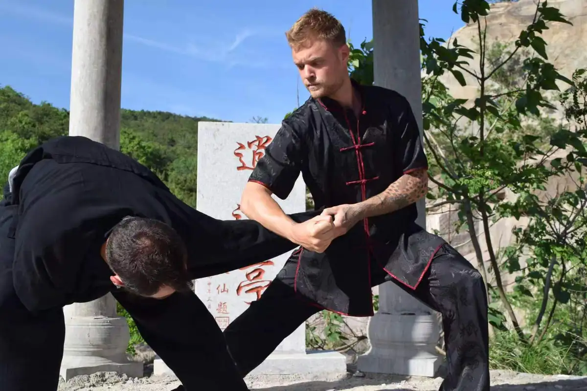

Daily training built for real progress
Training at Weihai Kung Fu Academy is structured around daily practice, direct correction, and long-term development. The emphasis is on real skill, internal growth, and full immersion rather than superficial exposure.

Traditional forms
Students learn movements, structure, coordination, and discipline through consistent practice.
Applications
Training includes practical applications so students understand how movements are used.
Internal and external work
Training programs combine physical martial practice with internal disciplines such as Tai Chi and Qigong.
Qigong and energy work
Students develop awareness of breath, posture, internal focus, and energy circulation as part of a more complete traditional training path.
Traditional Chinese theory
Students are introduced to concepts such as balance, internal energy (Qi), breath control, and how movement supports long-term health and vitality.
Open to all levels
Beginners can start from zero, while advanced practitioners can deepen existing skill through daily immersive practice.
The training is designed for people who want a structured, immersive martial arts experience with consistent daily practice and real long-term progress.